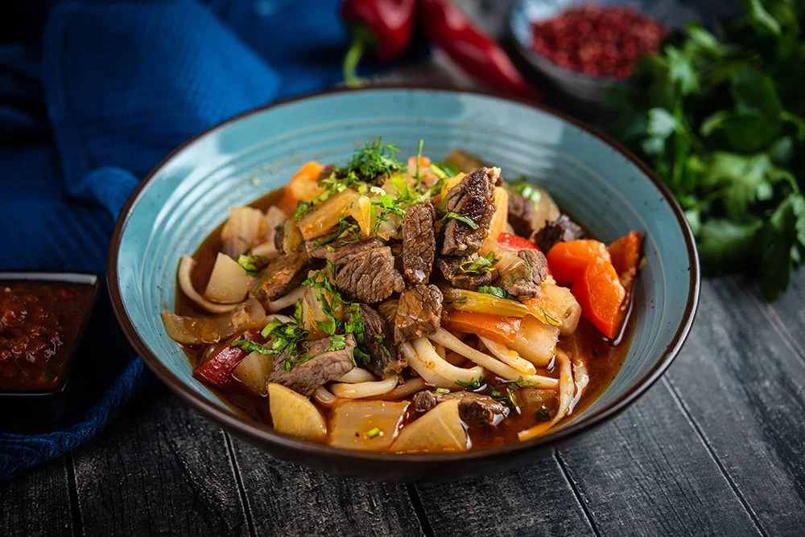

Lagman

Back to Odin Recipes
Description
Lagman is a hearty and flavorful Central Asian dish that combines hand-pulled noodles with stir-fried meat and vegetables, all simmered in a savory, aromatic broth
Ingridients
- 1 lb beef or lamb
- 1 onion
- 2 cloves garlic
- 1 carrot
- 1 bell pepper
- 1 tomato
- 1 small potato
- 1/2 zucchini
- 1–2 hot chili peppers
- 3 cups beef or vegetable broth
- 1 tsp ground cumin
- 1/2 tsp paprika
- 1 tsp coriander
Steps
- Make the noodles (or use store-bought): Mix flour, water, and salt into dough. Let rest, roll and stretch into noodles, then boil until cooked.
- Cook the meat: Sauté onion and garlic in oil, then add meat and brown it.
- Add vegetables: Stir in carrots, bell pepper, potato, and tomato (or paste). Cook for a few minutes.
- Season and simmer: Add spices, salt, pepper, and broth. Simmer for 20–30 minutes until meat is tender and vegetables are soft.
- Finish the sauce: Add zucchini and chili pepper (if using). Simmer 5–10 more minutes.
- Serve: Place noodles in a bowl, top with meat and vegetable sauce, and garnish with fresh herbs.